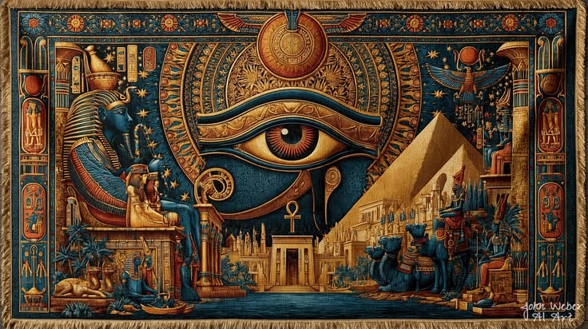
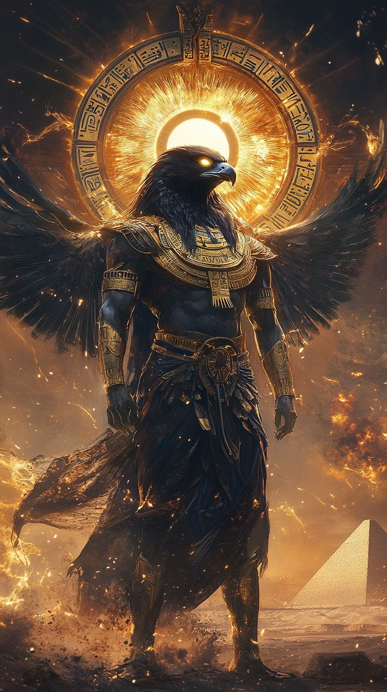
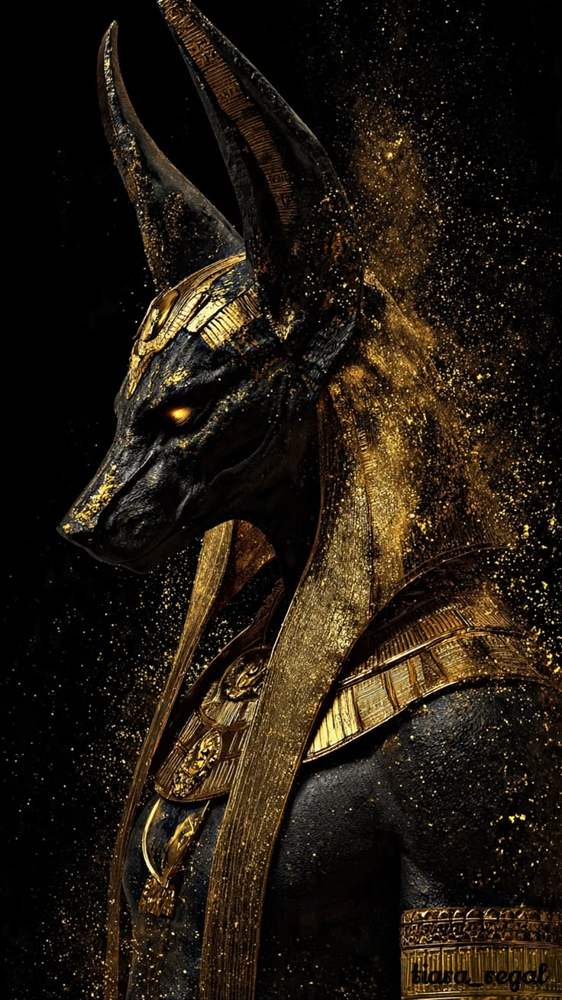
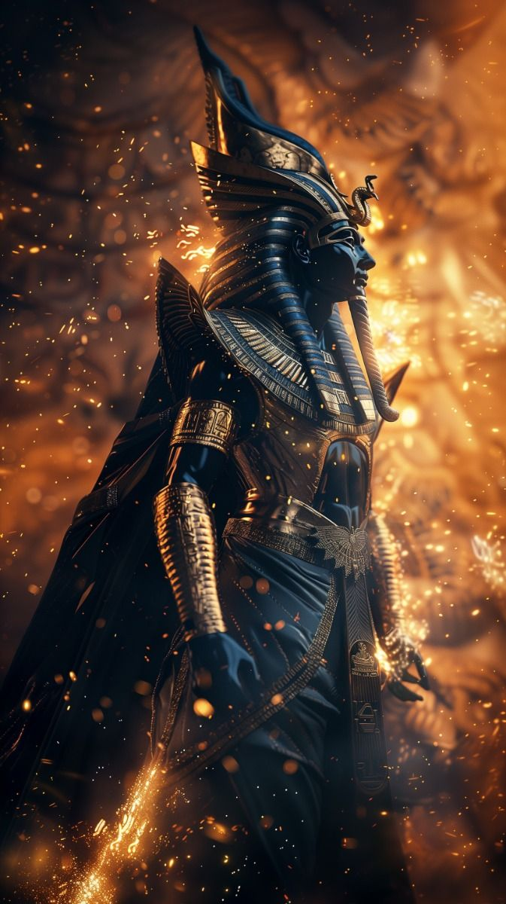
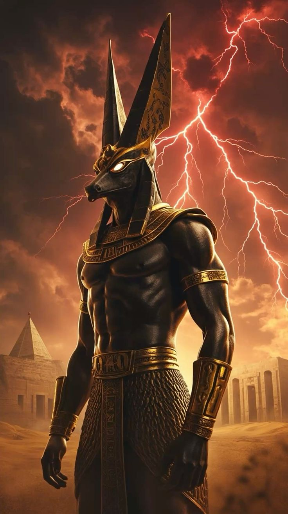
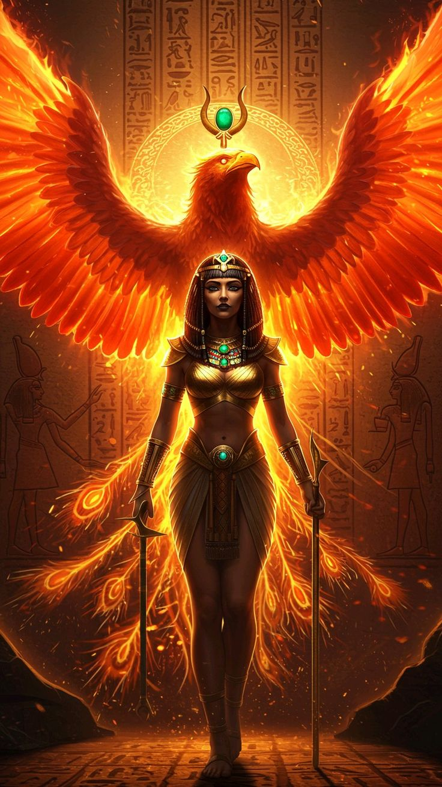

Los secretos del Nilo y la balanza de Maat
La mitología egipcia es el gran relato del Valle del Nilo: un panteón de dioses eternos ligados al sol y al inframundo, faraones divinizados y misterios milenarios que guardan las puertas del más allá.

Ra — El Señor del Sol y la Creación
Deidad solar suprema, creador del universo, fuente de luz y vida que cada noche atraviesa el inframundo para renacer al alba.
Ra es el pilar central del panteón egipcio, representado habitualmente con cabeza de halcón coronada por el disco solar abrazado por una serpiente uraeus. Cada día navegaba por los cielos en su barca sagrada (Mandjet), y al caer la noche descendía a la Duat en la barca Mesektet, donde libraba una batalla titánica contra la serpiente del caos, Apofis, para asegurar el renacer del sol cada mañana. Es el símbolo del poder dador de vida, del orden divino y de la luz inquebrantable sobre las tinieblas.


Anubis — El Guardián de la Necrópolis
Señor de los muertos, protector de las tumbas y guía en el juicio del alma.
Anubis es la antigua deidad funeraria con cabeza de chacal asociada con la momificación y el más allá. Era el encargado de guiar las almas de los difuntos hacia el Salón de las Dos Verdades, donde supervisaba el pesaje del corazón frente a la pluma de Maat, decidiendo el destino eterno en el inframundo.
Osiris — Señor de los Muertos y la Resurrección
Juez supremo del Duat, símbolo de la fertilidad de la tierra y la vida renovada.
Osiris es uno de los dioses más venerados del panteón, esposo de Isis y padre de Horus. Tras ser traicionado y asesinado por su hermano Seth, fue resucitado mágicamente por Isis, convirtiéndose en el rey soberano y juez del inframundo. Representado tradicionalmente con la piel verde o negra —simbolizando la vegetación y el renacimiento— y sosteniendo el cetro y el flagelo, encarna la promesa de la vida eterna para las almas justas.


Seth — Señor del Caos y las Tormentas
Deidad de la sequía, el desierto, la violencia y los truenos que sacuden la tierra.
Seth representa la fuerza destructiva y caótica de la naturaleza, amo de las áridas tierras del desierto y de las tormentas de arena. A pesar de su rol antagónico en la mitología frente a Osiris y Horus, cumplía una función defensiva crucial en la barca de Ra, siendo el único capaz de enfrentar y derrotar cada noche a la serpiente Apofis.
Isis — La Gran Diosa Madre y la Magia
Deidad de la maternidad, la magia y la protección, cuyo poder trasciende la vida y la muerte.
Isis es la diosa madre por excelencia, esposa de Osiris y madre de Horus. Su dominio sobre la magia y los hechizos le permitió resucitar a su esposo y proteger a su hijo, convirtiéndose en un símbolo de amor, sabiduría y poder femenino. Representada con un trono sobre su cabeza o con el disco solar entre cuernos de vaca, Isis era venerada como protectora de los faraones y guía espiritual de los mortales.

Leyendas en la mitología egipcia
El mito de la creación y el inicio del cosmos
Al principio solo existía un vasto océano de caos primordial llamado Nun, envuelto en total oscuridad. De esas aguas inmensas emergió espontáneamente el dios creador —en algunas tradiciones Atum, y en otras Ra—, quien al manifestarse sobre la colina primordial profirió la primera palabra mágica.
Con este acto separó las aguas, dio origen a la luz y engendró a los primeros dioses de la existencia: Shu (el aire) y Tefnut (la humedad). De ellos descendieron Geb (la tierra) y Nut (el cielo), completando los cimientos del universo y estableciendo el Maat, el orden cósmico de la verdad, la justicia y la armonía que regiría por siempre el destino de los dioses y de los hombres.
La disputa épica entre Horus y Seth
Tras el asesinato y desmembramiento de Osiris a manos de su envidioso hermano Seth, el caos amenazó con destruir Egipto. Isis logró recomponer el cuerpo de su esposo el tiempo suficiente para concebir milagrosamente a Horus. Ya convertido en joven guerrero, Horus reclamó el trono que por derecho le pertenecía.
Esto desató un juicio divino ante la asamblea de los dioses que duró ochenta años, marcado por brutales pruebas físicas, mágicas y engaños en los que Seth mutiló el ojo izquierdo de Horus y este último castró a su tío.
Finalmente, tras demostrar su sabiduría, bondad y justicia ante los dioses, Horus triunfó, recuperó la corona del Alto y Bajo Egipto y se convirtió en el protector legítimo de los faraones, mientras Seth fue desterrado para siempre a la soledad de los desiertos.
La travesía nocturna de Ra en la Duat
Cada atardecer, cuando el dios solar Ra completaba su luminoso recorrido diurno por los cielos, su barca sagrada viraba hacia el horizonte occidental para descender a las profundidades de la Duat, el tenebroso inframundo dividido en doce horas correspondientes a la noche. Para los egipcios, este no era un simple ocaso, sino una peligrosa aventura donde la vida misma pendía de un hilo. A lo largo de la travesía, Ra debía enfrentarse a guardianes hostiles, lagos de fuego y espíritus malignos. El clímax de la prueba ocurría en la décima hora, momento en que la temible serpiente gigante Apofis —encarnación absoluta del caos y la no-existencia— intentaba devorar el sol y secar el Nilo. Solo gracias a la ayuda de deidades protectoras como Seth, Bastet y Mehen, quienes repelían y encadenaban al monstruo, Ra lograba derrotarla una y otra vez para renacer triunfante al amanecer, renovando la esperanza de la humanidad.